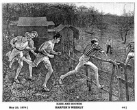
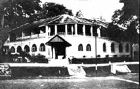

Many a sporting pursuit has culminated in sudsy celebration, and our Bali Hash House Harriers 2 is no exception: Hashers are drinkers with a 'running problem'.
Victor "Nightjar" Mason
The founder of hashing in Bali.
A legend in his own lunchtime.
|
Many reasons can be cited for venturing to the idyllic
island of Bali...the most common is the seductive nature of a magical
culture that permeates local life and the sensual beauty and grace of
Balinese women…. But the camaraderie I find within the Bali Hashbrings
me back…3 times a week a diverse and congenial group slogs through visually-stunning
landscapes before collapsing into a collective laugh during the most
unique Hash Circles in the Hashing world…. Long Live the Bali Hash…On
On…!!! |
A brief step by step history ...........
The Hash originated in Malaysia in the 1930's when a group of British expatriates, seeking some interest in their lives, adapted the kids game Hares & Hounds -in which a hare creates a trail for the hounds to follow. They always made sure the trail ended at "the Hash House", where merriment suitably lubricated with amber fluid finished off the day. Today, there are about 2,000 chapters worldwide, with hashing in Bali considered to be one of the supreme locations.
|
 |
 A.S. Gispert A.S. Gispert
The founder of hashing.
|
The original members of the Motherhash included Cecil Lee, Frederick "Horse" Thomson, Ronald "Torch" Bennett, Albert Stephen (A.S.) Ignatius "G" Gispert and John Woodrow.
After meeting for some months, they were informed by the Registrar of Societies that as a "group," they would require a Constitution and an official name. A. S. Gispert suggested the name "Hash House Harriers" after the Selangor Club Annex, where the men were billeted, known as the "Hash House" for its notoriously monotonous food.
Hashing died out during World War II after the invasion of Malaya, but was re-started after the war by most of the original group, minus A. S. Gispert, who was killed in the Japanese invasion of Singapore. |
The 'Hash House' was the mildly derogative nickname given (for its unimaginative, monotonous food) to the Selangor Club Chambers, by British Civil Servants who lived and dined there. Originally, the ground floor housed the main Selangor Club dining room, and between the two World Wars it became a social center of the times, used regularly for lunch time meals by the members who worked in the immediate vicinity.
|